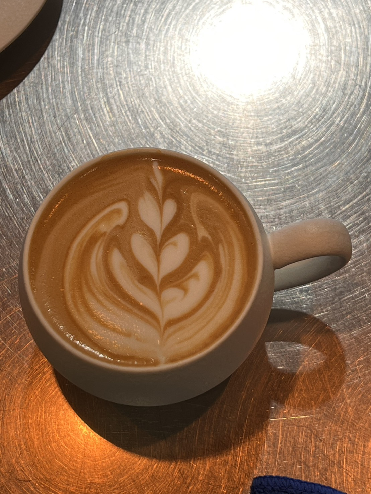

Visual Portfolio
Kitchen & Bar Works




Barista & Kitchen Hand · All-Rounder
Experienced All-Rounder skilled in specialty espresso execution, high-end cafe brunch preparation, and intricate knife work including avocado rose shaping. Reliable, fast-paced, and ready for immediate trial shifts in Melbourne.

Executed brunch dish preparation, Nordic open sandwiches, pasta, and gourmet plating. Specialized in delicate knife work including avocado rose cutting and egg roll techniques. Handled meat butchery, vacuum sealing, and broth reduction.
Managed espresso calibration, pour-overs, and independent bar service. Developed 3 original signature beverages and rebuilt stock control systems to minimize waste during rush hours.
Trained in high-volume commercial chain standards across 500+ locations, focusing on speed, consistency, and station rotation.